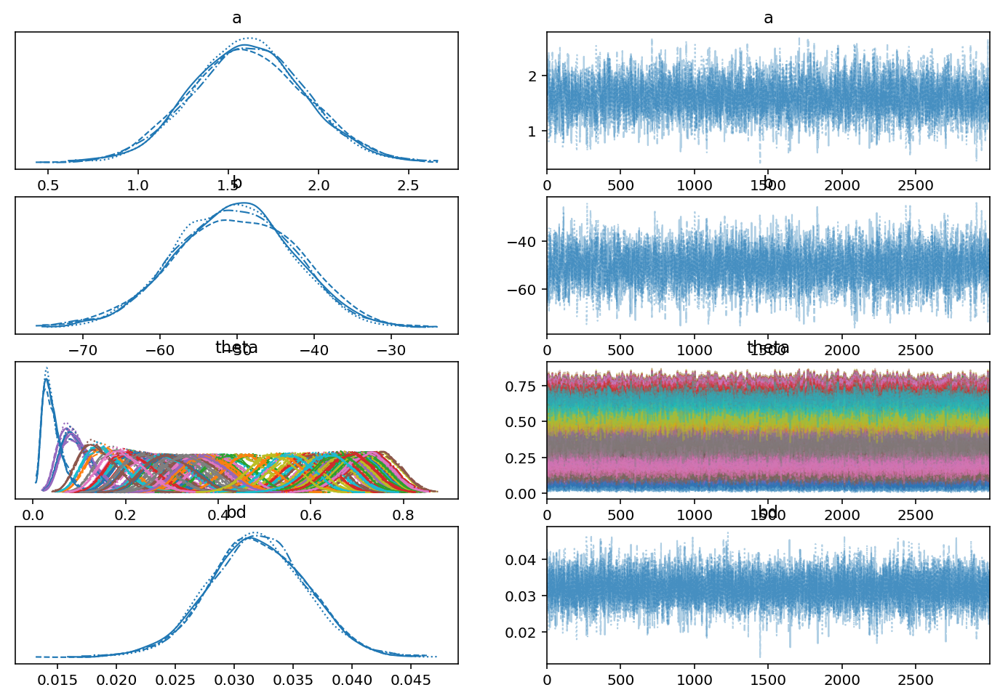
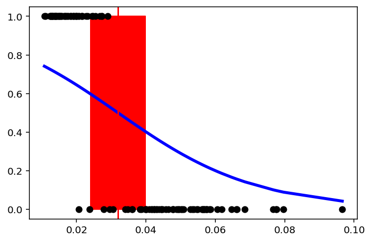
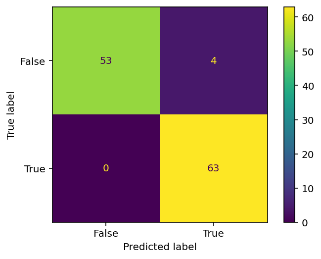
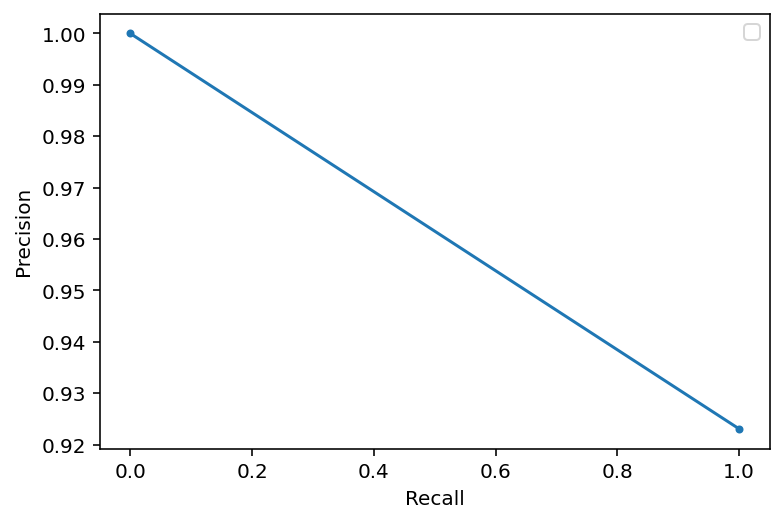
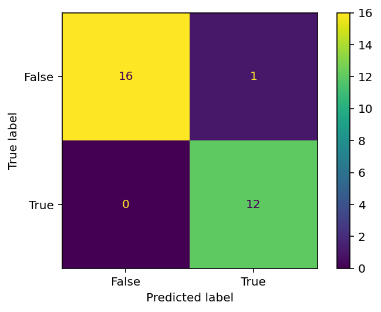
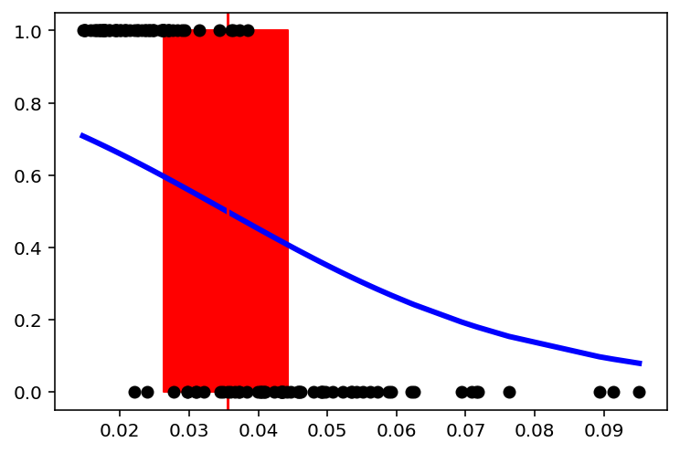
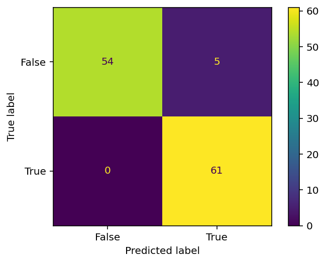
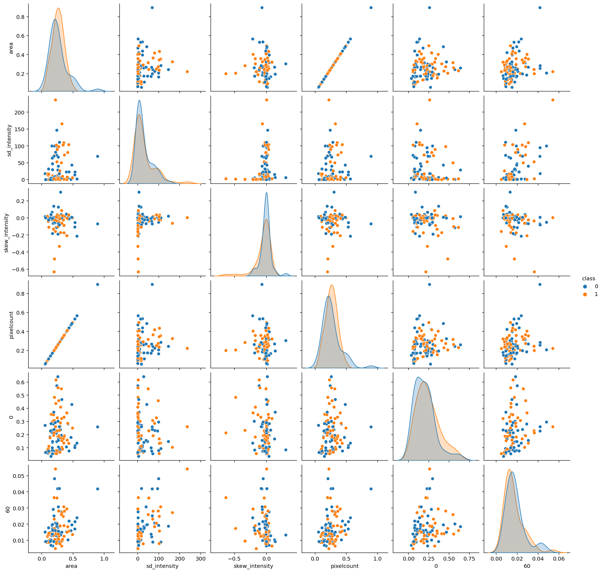
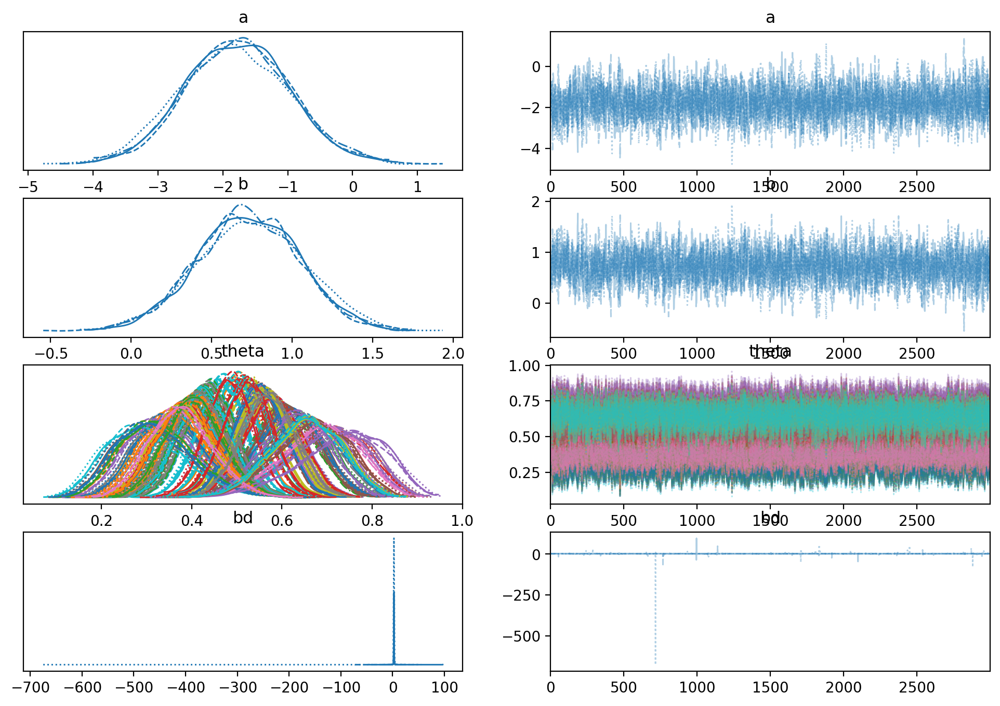
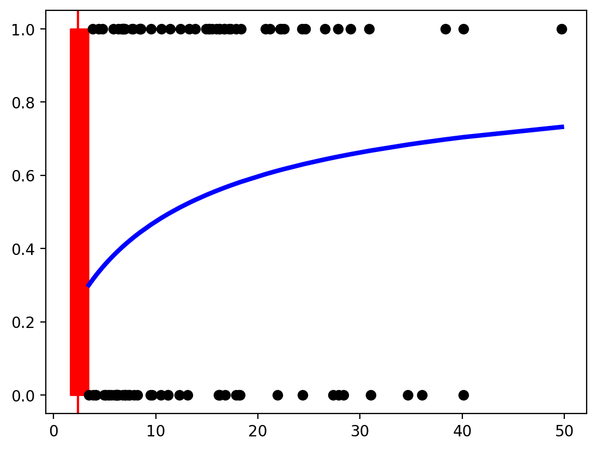

[7]:
import pandas as pd
#pd.set_option('display.max_columns', 500)
#pd.set_option('display.max_rows', 500)
import pickle
from jupyter_dash import JupyterDash
import dash
from dash import dcc
from dash import html
from dash.dependencies import Input, Output
import dash_bootstrap_components as dbc
import sys
import numpy as np
np.set_printoptions(threshold=sys.maxsize)
import matplotlib.pyplot as plt
from PIL import Image, ImageEnhance, ImageDraw,ImageFont
import seaborn as sns
#sns.set()
import arviz as az
import pymc3 as pm
print(pm.__version__)
import theano.tensor as tt
import patsy
import os
import re
import glob
import random
# import plotnine
from sklearn import preprocessing
from tqdm import tqdm
# import plotnine
# from plotnine.data import economics
# from plotnine import *
import plotly.express as px
from skimage import measure, restoration,morphology
from skimage import io, filters, measure, color, img_as_ubyte
from skimage.draw import disk
from skimage import measure, restoration,morphology
RANDOM_SEED = 8927
np.random.seed(RANDOM_SEED)
%config InlineBackend.figure_format = 'retina'
os.chdir(r'F:\HAB_2\PrinzScreen\training_classfication')
from utils import AIPS_cellpose as AC
from utils import AIPS_file_display as AFD
WARNING (theano.tensor.blas): Using NumPy C-API based implementation for BLAS functions.
3.11.5
F:\Gil\anaconda\envs\pymc3_cellpose\lib\site-packages\tqdm\auto.py:22: TqdmWarning: IProgress not found. Please update jupyter and ipywidgets. See https://ipywidgets.readthedocs.io/en/stable/user_install.html
from .autonotebook import tqdm as notebook_tqdm
F:\Gil\anaconda\envs\pymc3_cellpose\lib\site-packages\skimage\viewer\utils\__init__.py:1: UserWarning: Recommended matplotlib backend is `Agg` for full skimage.viewer functionality.
from .core import *
Logistic regression
Decay formula:
$ Signal(t) = a \times `Signal(t0) :nbsphinx-math:times e^{-b :nbsphinx-math:times `kernel}$
\(b = - \frac {ln \frac {Signal(t)}{Signal(t0)}}{Kernel}\) Remove the minus sign for compatebility with logistic
Add a parmetre and beta $ \theta `= logistic(a + :nbsphinx-math:beta :nbsphinx-math:frac {ln frac {Signal(t)}{Signal(t0)}}{Kernel}`)$ —
☐ Divide signal by median per image, add class culomn and remove all the zeros
☐ Add Signal start (Signal(t0)) and Signal(t)
☐ Plot b per image
☐ Remove ambiguous signal
☐ Concatenate data_frames
[22]:
def add_class_select(ones_,zero_,table):
table['class'] = 0
table.loc[table['image_group'].values == ones_,'class'] = 1
df = pd.concat((table.loc[table['image_group'].values == ones_,:],
table.loc[table['image_group'].values == zero_,:]),0)
return df
def add_rate_column(df):
un = np.unique(df['image_group'])
# adding Signal start and finsh
df['Nt'] = 0
df['Kernel'] = df.raius_list.values+1
for un_ in un:
df_temp = df.loc[df['image_group'].values==un_,:]
df.loc[df['image_group']==un_,'Nt'] = np.repeat(df_temp.iloc[0,4],len(df_temp))
df['b'] = -1*(np.log(df.image_signal_norm.values/df.Nt.values)/df.Kernel.values)
# Keep until 20
for un_ in un:
df_temp = df.loc[df['image_group'].values==un_,:]
df.loc[df['image_group']==un_,'b'] = np.mean(df_temp.b.values[1:20])
# plt.figure(figsize=(5, 20))
# sns.catplot(x="image_group", y="b",
# hue="class", palette=["m", "g"],
# data=df,
# height=5, # make the plot 5 units high
# aspect=4)
return df
def Class_table(path_Table_img,file_name,path_class,file_class):
table = pd.read_csv(os.path.join(path_Table_img,file_name))
table['image_signal_norm'] = table.image_signal.values/np.median(table.loc[table['raius_list']==0,'image_signal'])
# upload class
with open(os.path.join(path_class,file_class)) as f:
class_r = f.readline()
Pheno_list = [int(x) for x in class_r.split(';')]
zero_list = [zz for zz in np.arange(np.max(Pheno_list)).tolist() if zz not in Pheno_list]
### Adding classes
df = pd.DataFrame(columns = table.columns)
for i in range(len(Pheno_list)):
df_temp = add_class_select(Pheno_list[i],zero_list[i],table)
df = pd.concat((df,df_temp),0)
df_rate = add_rate_column(df)
df_rate['Image_name_unique'] = file_name
return df_rate
[23]:
path = r'F:\HAB_2\PrinzScreen\output_lab_meeting\Kernel_80_mix_0to6'
path_class = r'F:\HAB_2\PrinzScreen\output_lab_meeting\Kernel_80_mix_0to6\class_update' # update from Remove_obser...
Table_mix_0 = Class_table(path,'table_img0.csv',path_class,'class_0.txt')
Table_mix_1 = Class_table(path,'table_img1.csv',path_class,'class_1.txt')
Table_mix_2 = Class_table(path,'table_img2.csv',path_class,'class_2.txt')
Table_mix_3 = Class_table(path,'table_img3.csv',path_class,'class_3.txt')
Table_mix_4 = Class_table(path,'table_img4.csv',path_class,'class_4.txt')
Table_mix_5 = Class_table(path,'table_img5.csv',path_class,'class_5.txt')
Table_mix_6 = Class_table(path,'table_img6.csv',path_class,'class_6.txt')
Table_sum = pd.concat((Table_mix_0,Table_mix_1,Table_mix_2,Table_mix_3,Table_mix_4,Table_mix_5,Table_mix_6),0)
Table_sum.head(2)
F:\Gil\anaconda\envs\pymc3_cellpose\lib\site-packages\ipykernel_launcher.py:5: FutureWarning: In a future version of pandas all arguments of concat except for the argument 'objs' will be keyword-only
"""
F:\Gil\anaconda\envs\pymc3_cellpose\lib\site-packages\ipykernel_launcher.py:42: FutureWarning: In a future version of pandas all arguments of concat except for the argument 'objs' will be keyword-only
F:\Gil\anaconda\envs\pymc3_cellpose\lib\site-packages\ipykernel_launcher.py:11: FutureWarning: In a future version of pandas all arguments of concat except for the argument 'objs' will be keyword-only
# This is added back by InteractiveShellApp.init_path()
[23]:
| Unnamed: 0 | image_signal | raius_list | image_group | image_signal_norm | class | Nt | Kernel | b | Image_name_unique | |
|---|---|---|---|---|---|---|---|---|---|---|
| 17680 | 17680 | 3279.715582 | 0 | 221 | 1.892512 | 1.0 | 1.892512 | 1 | 0.019165 | table_img0.csv |
| 17681 | 17681 | 3243.717554 | 1 | 221 | 1.871740 | 1.0 | 1.892512 | 2 | 0.019165 | table_img0.csv |
Decay rate (b) as input for Logistic regression
[47]:
un_Image = np.unique(Table_sum['Image_name_unique'])
rate = []
image_group = []
Image_name_unique = []
class_list = []
for image in un_Image:
table_temp = Table_sum.loc[Table_sum["Image_name_unique"]==image,:]
un_num = np.unique(table_temp['image_group'])
for num in un_num:
rate.append(np.unique(table_temp.loc[table_temp["image_group"]==num,'b'])[0])
image_group.append(num)
class_list.append(np.unique(table_temp.loc[table_temp["image_group"]==num,'class'])[0])
df_collect = pd.DataFrame({'image_group':image_group,'rate':rate,'class_list':class_list})
df_collect = df_collect.sample(len(df_collect)) #suffle
df_train = df_collect.iloc[:120,:]
df_train['unique'] = np.arange(len(df_train))
df_test = df_collect.iloc[121:len(df_collect),:]
df_test['unique'] = np.arange(len(df_test))
F:\Gil\anaconda\envs\pymc3_cellpose\lib\site-packages\ipykernel_launcher.py:16: SettingWithCopyWarning:
A value is trying to be set on a copy of a slice from a DataFrame.
Try using .loc[row_indexer,col_indexer] = value instead
See the caveats in the documentation: https://pandas.pydata.org/pandas-docs/stable/user_guide/indexing.html#returning-a-view-versus-a-copy
app.launch_new_instance()
F:\Gil\anaconda\envs\pymc3_cellpose\lib\site-packages\ipykernel_launcher.py:18: SettingWithCopyWarning:
A value is trying to be set on a copy of a slice from a DataFrame.
Try using .loc[row_indexer,col_indexer] = value instead
See the caveats in the documentation: https://pandas.pydata.org/pandas-docs/stable/user_guide/indexing.html#returning-a-view-versus-a-copy
[52]:
rate = df_train.rate.values
y_0 = df_train.class_list.values
with pm.Model() as model_logistic_basic:
a = pm.Normal('a',0,10)
b = pm.Normal('b',0,10)
mu = a + pm.math.dot(rate,b)
theta = pm.Deterministic('theta', 1 / (1 + pm.math.exp(-mu)))
bd = pm.Deterministic('bd',-a/b)
yl = pm.Bernoulli('yl',theta,observed = y_0)
trace = pm.sample(4000, tune=4000, target_accept=0.99,random_seed=RANDOM_SEED)
F:\Gil\anaconda\envs\pymc3_cellpose\lib\site-packages\deprecat\classic.py:215: FutureWarning: In v4.0, pm.sample will return an `arviz.InferenceData` object instead of a `MultiTrace` by default. You can pass return_inferencedata=True or return_inferencedata=False to be safe and silence this warning.
return wrapped_(*args_, **kwargs_)
Auto-assigning NUTS sampler...
Initializing NUTS using jitter+adapt_diag...
Multiprocess sampling (4 chains in 4 jobs)
NUTS: [b, a]
100.00% [32000/32000 00:26<00:00 Sampling 4 chains, 0 divergences]
Sampling 4 chains for 4_000 tune and 4_000 draw iterations (16_000 + 16_000 draws total) took 61 seconds.
[53]:
chain_1 = trace[1000:]
pm.traceplot(chain_1)
F:\Gil\anaconda\envs\pymc3_cellpose\lib\site-packages\ipykernel_launcher.py:2: DeprecationWarning: The function `traceplot` from PyMC3 is just an alias for `plot_trace` from ArviZ. Please switch to `pymc3.plot_trace` or `arviz.plot_trace`.
Got error No model on context stack. trying to find log_likelihood in translation.
F:\Gil\anaconda\envs\pymc3_cellpose\lib\site-packages\arviz\data\io_pymc3_3x.py:102: FutureWarning: Using `from_pymc3` without the model will be deprecated in a future release. Not using the model will return less accurate and less useful results. Make sure you use the model argument or call from_pymc3 within a model context.
FutureWarning,
Got error No model on context stack. trying to find log_likelihood in translation.
[53]:
array([[<AxesSubplot:title={'center':'a'}>,
<AxesSubplot:title={'center':'a'}>],
[<AxesSubplot:title={'center':'b'}>,
<AxesSubplot:title={'center':'b'}>],
[<AxesSubplot:title={'center':'theta'}>,
<AxesSubplot:title={'center':'theta'}>],
[<AxesSubplot:title={'center':'bd'}>,
<AxesSubplot:title={'center':'bd'}>]], dtype=object)

[54]:
pm.summary(trace)
Got error No model on context stack. trying to find log_likelihood in translation.
F:\Gil\anaconda\envs\pymc3_cellpose\lib\site-packages\arviz\data\io_pymc3_3x.py:102: FutureWarning: Using `from_pymc3` without the model will be deprecated in a future release. Not using the model will return less accurate and less useful results. Make sure you use the model argument or call from_pymc3 within a model context.
FutureWarning,
[54]:
| mean | sd | hdi_3% | hdi_97% | mcse_mean | mcse_sd | ess_bulk | ess_tail | r_hat | |
|---|---|---|---|---|---|---|---|---|---|
| a | 1.609 | 0.315 | 1.026 | 2.212 | 0.005 | 0.003 | 4783.0 | 5411.0 | 1.0 |
| b | -50.345 | 7.600 | -65.050 | -36.577 | 0.110 | 0.078 | 4776.0 | 5111.0 | 1.0 |
| theta[0] | 0.228 | 0.048 | 0.144 | 0.322 | 0.000 | 0.000 | 9742.0 | 8482.0 | 1.0 |
| theta[1] | 0.626 | 0.050 | 0.532 | 0.720 | 0.001 | 0.000 | 6673.0 | 8038.0 | 1.0 |
| theta[2] | 0.226 | 0.048 | 0.140 | 0.317 | 0.000 | 0.000 | 9686.0 | 8482.0 | 1.0 |
| ... | ... | ... | ... | ... | ... | ... | ... | ... | ... |
| theta[116] | 0.195 | 0.046 | 0.115 | 0.286 | 0.000 | 0.000 | 8908.0 | 8185.0 | 1.0 |
| theta[117] | 0.335 | 0.050 | 0.244 | 0.432 | 0.000 | 0.000 | 11606.0 | 8795.0 | 1.0 |
| theta[118] | 0.518 | 0.050 | 0.421 | 0.609 | 0.001 | 0.000 | 9830.0 | 8777.0 | 1.0 |
| theta[119] | 0.637 | 0.050 | 0.542 | 0.730 | 0.001 | 0.000 | 6476.0 | 7909.0 | 1.0 |
| bd | 0.032 | 0.004 | 0.024 | 0.040 | 0.000 | 0.000 | 10384.0 | 8377.0 | 1.0 |
123 rows × 9 columns
[57]:
theta = trace['theta'].mean(0)
idx = np.argsort(rate)
plt.plot(rate[idx],theta[idx],color ='b',lw=3)
plt.axvline(trace['bd'].mean(),ymax=1,color = 'r')
bd_hdi = pm.hdi(trace['bd'])
plt.fill_betweenx([0,1],bd_hdi[0],bd_hdi[1], color = 'r')
plt.plot(rate,y_0,'o',color = 'k')
[57]:
[<matplotlib.lines.Line2D at 0x277340b1f88>]

[96]:
def classify(n,thold):
mu = trace['a'].mean() + trace['b'].mean() * n
prob = 1 /(1 + np.exp(-mu))
return prob, prob > thold
rate = df_train.rate.values
td = 0.5
prob,prediction = classify(rate,td)
[97]:
from sklearn import metrics
confusion_matrix = metrics.confusion_matrix(np.array(df_train.class_list.values,dtype = int), np.where(prediction,1,0))
cm_display = metrics.ConfusionMatrixDisplay(confusion_matrix = confusion_matrix, display_labels = [False, True])
cm_display.plot()
plt.show()

Test samples prediction
[81]:
def classify(n,thold):
mu = trace['a'].mean() + trace['b'].mean() * n
prob = 1 /(1 + np.exp(-mu))
return prob, prob > thold
rate = df_test.rate.values
td = 0.5
prob,prediction = classify(rate,td)
[82]:
np.where(prediction,1,0)
[82]:
array([0, 0, 0, 1, 1, 0, 1, 0, 1, 1, 1, 0, 0, 0, 1, 1, 1, 0, 1, 0, 0, 1,
0, 0, 1, 1, 0, 0, 0])
[86]:
np.array(df_test.class_list.values,dtype = int)
[86]:
array([0, 0, 0, 1, 1, 0, 1, 0, 0, 1, 1, 0, 0, 0, 1, 1, 1, 0, 1, 0, 0, 1,
0, 0, 1, 1, 0, 0, 0])
[88]:
No artists with labels found to put in legend. Note that artists whose label start with an underscore are ignored when legend() is called with no argument.

[92]:
from sklearn import metrics
confusion_matrix = metrics.confusion_matrix(np.array(df_test.class_list.values,dtype = int), np.where(prediction,1,0))
cm_display = metrics.ConfusionMatrixDisplay(confusion_matrix = confusion_matrix, display_labels = [False, True])
cm_display.plot()
plt.show()
[93]:

[ ]:
# Test Kernel 20 for prediction
[98]:
def add_class_select(ones_,zero_,table):
table['class'] = 0
table.loc[table['image_group'].values == ones_,'class'] = 1
df = pd.concat((table.loc[table['image_group'].values == ones_,:],
table.loc[table['image_group'].values == zero_,:]),0)
return df
def add_rate_column(df):
un = np.unique(df['image_group'])
# adding Signal start and finsh
df['Nt'] = 0
df['Kernel'] = df.raius_list.values+1
for un_ in un:
df_temp = df.loc[df['image_group'].values==un_,:]
df.loc[df['image_group']==un_,'Nt'] = np.repeat(df_temp.iloc[0,4],len(df_temp))
df['b'] = -1*(np.log(df.image_signal_norm.values/df.Nt.values)/df.Kernel.values)
df['b20'] = 0
# Keep until 20
for un_ in un:
df_temp = df.loc[df['image_group'].values==un_,:]
df.loc[df['image_group']==un_,'b'] = np.mean(df_temp.b.values[1:20])
df.loc[df['image_group']==un_,'b20'] = df_temp.b.values[20]
# plt.figure(figsize=(5, 20))
# sns.catplot(x="image_group", y="b",
# hue="class", palette=["m", "g"],
# data=df,
# height=5, # make the plot 5 units high
# aspect=4)
return df
def Class_table(path_Table_img,file_name,path_class,file_class):
table = pd.read_csv(os.path.join(path_Table_img,file_name))
table['image_signal_norm'] = table.image_signal.values/np.median(table.loc[table['raius_list']==0,'image_signal'])
# upload class
with open(os.path.join(path_class,file_class)) as f:
class_r = f.readline()
Pheno_list = [int(x) for x in class_r.split(';')]
zero_list = [zz for zz in np.arange(np.max(Pheno_list)).tolist() if zz not in Pheno_list]
### Adding classes
df = pd.DataFrame(columns = table.columns)
for i in range(len(Pheno_list)):
df_temp = add_class_select(Pheno_list[i],zero_list[i],table)
df = pd.concat((df,df_temp),0)
df_rate = add_rate_column(df)
df_rate['Image_name_unique'] = file_name
return df_rate
[99]:
path = r'F:\HAB_2\PrinzScreen\output_lab_meeting\Kernel_80_mix_0to6'
path_class = r'F:\HAB_2\PrinzScreen\output_lab_meeting\Kernel_80_mix_0to6\class_update' # update from Remove_obser...
Table_mix_0 = Class_table(path,'table_img0.csv',path_class,'class_0.txt')
Table_mix_1 = Class_table(path,'table_img1.csv',path_class,'class_1.txt')
Table_mix_2 = Class_table(path,'table_img2.csv',path_class,'class_2.txt')
Table_mix_3 = Class_table(path,'table_img3.csv',path_class,'class_3.txt')
Table_mix_4 = Class_table(path,'table_img4.csv',path_class,'class_4.txt')
Table_mix_5 = Class_table(path,'table_img5.csv',path_class,'class_5.txt')
Table_mix_6 = Class_table(path,'table_img6.csv',path_class,'class_6.txt')
Table_sum = pd.concat((Table_mix_0,Table_mix_1,Table_mix_2,Table_mix_3,Table_mix_4,Table_mix_5,Table_mix_6),0)
Table_sum.head(2)
F:\Gil\anaconda\envs\pymc3_cellpose\lib\site-packages\ipykernel_launcher.py:5: FutureWarning: In a future version of pandas all arguments of concat except for the argument 'objs' will be keyword-only
"""
F:\Gil\anaconda\envs\pymc3_cellpose\lib\site-packages\ipykernel_launcher.py:45: FutureWarning: In a future version of pandas all arguments of concat except for the argument 'objs' will be keyword-only
F:\Gil\anaconda\envs\pymc3_cellpose\lib\site-packages\ipykernel_launcher.py:11: FutureWarning: In a future version of pandas all arguments of concat except for the argument 'objs' will be keyword-only
# This is added back by InteractiveShellApp.init_path()
[99]:
| Unnamed: 0 | image_signal | raius_list | image_group | image_signal_norm | class | Nt | Kernel | b | b20 | Image_name_unique | |
|---|---|---|---|---|---|---|---|---|---|---|---|
| 17680 | 17680 | 3279.715582 | 0 | 221 | 1.892512 | 1.0 | 1.892512 | 1 | 0.019165 | 0.026171 | table_img0.csv |
| 17681 | 17681 | 3243.717554 | 1 | 221 | 1.871740 | 1.0 | 1.892512 | 2 | 0.019165 | 0.026171 | table_img0.csv |
[100]:
un_Image = np.unique(Table_sum['Image_name_unique'])
rate = []
rate_b20 = []
image_group = []
Image_name_unique = []
class_list = []
for image in un_Image:
table_temp = Table_sum.loc[Table_sum["Image_name_unique"]==image,:]
un_num = np.unique(table_temp['image_group'])
for num in un_num:
rate.append(np.unique(table_temp.loc[table_temp["image_group"]==num,'b'])[0])
rate_b20.append(np.unique(table_temp.loc[table_temp["image_group"]==num,'b20'])[0])
image_group.append(num)
class_list.append(np.unique(table_temp.loc[table_temp["image_group"]==num,'class'])[0])
df_collect = pd.DataFrame({'image_group':image_group,'rate':rate,'rate_b20':rate_b20,'class_list':class_list})
df_collect = df_collect.sample(len(df_collect)) #suffle
df_train = df_collect.iloc[:120,:]
df_train['unique'] = np.arange(len(df_train))
df_test = df_collect.iloc[121:len(df_collect),:]
df_test['unique'] = np.arange(len(df_test))
F:\Gil\anaconda\envs\pymc3_cellpose\lib\site-packages\ipykernel_launcher.py:18: SettingWithCopyWarning:
A value is trying to be set on a copy of a slice from a DataFrame.
Try using .loc[row_indexer,col_indexer] = value instead
See the caveats in the documentation: https://pandas.pydata.org/pandas-docs/stable/user_guide/indexing.html#returning-a-view-versus-a-copy
F:\Gil\anaconda\envs\pymc3_cellpose\lib\site-packages\ipykernel_launcher.py:20: SettingWithCopyWarning:
A value is trying to be set on a copy of a slice from a DataFrame.
Try using .loc[row_indexer,col_indexer] = value instead
See the caveats in the documentation: https://pandas.pydata.org/pandas-docs/stable/user_guide/indexing.html#returning-a-view-versus-a-copy
[103]:
rate = df_train.rate_b20.values
y_0 = df_train.class_list.values
with pm.Model() as model_logistic_basic:
a = pm.Normal('a',0,10)
b = pm.Normal('b',0,10)
mu = a + pm.math.dot(rate,b)
theta = pm.Deterministic('theta', 1 / (1 + pm.math.exp(-mu)))
bd = pm.Deterministic('bd',-a/b)
yl = pm.Bernoulli('yl',theta,observed = y_0)
trace = pm.sample(4000, tune=4000, target_accept=0.99,random_seed=RANDOM_SEED)
F:\Gil\anaconda\envs\pymc3_cellpose\lib\site-packages\deprecat\classic.py:215: FutureWarning: In v4.0, pm.sample will return an `arviz.InferenceData` object instead of a `MultiTrace` by default. You can pass return_inferencedata=True or return_inferencedata=False to be safe and silence this warning.
return wrapped_(*args_, **kwargs_)
Auto-assigning NUTS sampler...
Initializing NUTS using jitter+adapt_diag...
Multiprocess sampling (4 chains in 4 jobs)
NUTS: [b, a]
100.00% [32000/32000 00:26<00:00 Sampling 4 chains, 0 divergences]
Sampling 4 chains for 4_000 tune and 4_000 draw iterations (16_000 + 16_000 draws total) took 58 seconds.
The number of effective samples is smaller than 25% for some parameters.
[104]:
theta = trace['theta'].mean(0)
idx = np.argsort(rate)
plt.plot(rate[idx],theta[idx],color ='b',lw=3)
plt.axvline(trace['bd'].mean(),ymax=1,color = 'r')
bd_hdi = pm.hdi(trace['bd'])
plt.fill_betweenx([0,1],bd_hdi[0],bd_hdi[1], color = 'r')
plt.plot(rate,y_0,'o',color = 'k')
[104]:
[<matplotlib.lines.Line2D at 0x2771dde1988>]

[105]:
def classify(n,thold):
mu = trace['a'].mean() + trace['b'].mean() * n
prob = 1 /(1 + np.exp(-mu))
return prob, prob > thold
rate = df_train.rate.values
td = 0.5
prob,prediction = classify(rate,td)
[106]:
from sklearn import metrics
confusion_matrix = metrics.confusion_matrix(np.array(df_train.class_list.values,dtype = int), np.where(prediction,1,0))
cm_display = metrics.ConfusionMatrixDisplay(confusion_matrix = confusion_matrix, display_labels = [False, True])
cm_display.plot()
plt.show()

Compute b from 1,5,10,20
Adding parameter for the sequence calculation
[108]:
def add_class_select(ones_,zero_,table):
table['class'] = 0
table.loc[table['image_group'].values == ones_,'class'] = 1
df = pd.concat((table.loc[table['image_group'].values == ones_,:],
table.loc[table['image_group'].values == zero_,:]),0)
return df
def add_rate_column(df):
un = np.unique(df['image_group'])
# adding Signal start and finsh
df['Nt'] = 0
df['Kernel'] = df.raius_list.values+1
for un_ in un:
df_temp = df.loc[df['image_group'].values==un_,:]
df.loc[df['image_group']==un_,'Nt'] = np.repeat(df_temp.iloc[0,4],len(df_temp))
# plt.figure(figsize=(5, 20))
# sns.catplot(x="image_group", y="b",
# hue="class", palette=["m", "g"],
# data=df,
# height=5, # make the plot 5 units high
# aspect=4)
return df
def Class_table(path_Table_img,file_name,path_class,file_class):
table = pd.read_csv(os.path.join(path_Table_img,file_name))
table['image_signal_norm'] = table.image_signal.values/np.median(table.loc[table['raius_list']==0,'image_signal'])
# upload class
with open(os.path.join(path_class,file_class)) as f:
class_r = f.readline()
Pheno_list = [int(x) for x in class_r.split(';')]
zero_list = [zz for zz in np.arange(np.max(Pheno_list)).tolist() if zz not in Pheno_list]
### Adding classes
df = pd.DataFrame(columns = table.columns)
for i in range(len(Pheno_list)):
df_temp = add_class_select(Pheno_list[i],zero_list[i],table)
df = pd.concat((df,df_temp),0)
df_rate = add_rate_column(df)
df_rate['Image_name_unique'] = file_name
return df_rate
[110]:
path = r'F:\HAB_2\PrinzScreen\output_lab_meeting\Kernel_80_mix_0to6'
path_class = r'F:\HAB_2\PrinzScreen\output_lab_meeting\Kernel_80_mix_0to6\class_update' # update from Remove_obser...
Table_mix_0 = Class_table(path,'table_img0.csv',path_class,'class_0.txt')
Table_mix_1 = Class_table(path,'table_img1.csv',path_class,'class_1.txt')
Table_mix_2 = Class_table(path,'table_img2.csv',path_class,'class_2.txt')
Table_mix_3 = Class_table(path,'table_img3.csv',path_class,'class_3.txt')
Table_mix_4 = Class_table(path,'table_img4.csv',path_class,'class_4.txt')
Table_mix_5 = Class_table(path,'table_img5.csv',path_class,'class_5.txt')
Table_mix_6 = Class_table(path,'table_img6.csv',path_class,'class_6.txt')
Table_sum = pd.concat((Table_mix_0,Table_mix_1,Table_mix_2,Table_mix_3,Table_mix_4,Table_mix_5,Table_mix_6),0)
Table_sum
F:\Gil\anaconda\envs\pymc3_cellpose\lib\site-packages\ipykernel_launcher.py:5: FutureWarning: In a future version of pandas all arguments of concat except for the argument 'objs' will be keyword-only
"""
F:\Gil\anaconda\envs\pymc3_cellpose\lib\site-packages\ipykernel_launcher.py:37: FutureWarning: In a future version of pandas all arguments of concat except for the argument 'objs' will be keyword-only
F:\Gil\anaconda\envs\pymc3_cellpose\lib\site-packages\ipykernel_launcher.py:11: FutureWarning: In a future version of pandas all arguments of concat except for the argument 'objs' will be keyword-only
# This is added back by InteractiveShellApp.init_path()
[110]:
| Unnamed: 0 | image_signal | raius_list | image_group | image_signal_norm | class | Nt | Kernel | Image_name_unique | |
|---|---|---|---|---|---|---|---|---|---|
| 17680 | 17680 | 3279.715582 | 0 | 221 | 1.892512 | 1.0 | 1.892512 | 1 | table_img0.csv |
| 17681 | 17681 | 3243.717554 | 1 | 221 | 1.871740 | 1.0 | 1.892512 | 2 | table_img0.csv |
| 17682 | 17682 | 3207.038659 | 2 | 221 | 1.850575 | 1.0 | 1.892512 | 3 | table_img0.csv |
| 17683 | 17683 | 3160.837870 | 3 | 221 | 1.823915 | 1.0 | 1.892512 | 4 | table_img0.csv |
| 17684 | 17684 | 3106.424852 | 4 | 221 | 1.792517 | 1.0 | 1.892512 | 5 | table_img0.csv |
| ... | ... | ... | ... | ... | ... | ... | ... | ... | ... |
| 795 | 795 | 130.016662 | 75 | 9 | 0.052068 | 0.0 | 0.759612 | 76 | table_img6.csv |
| 796 | 796 | 130.003029 | 76 | 9 | 0.052062 | 0.0 | 0.759612 | 77 | table_img6.csv |
| 797 | 797 | 130.000000 | 77 | 9 | 0.052061 | 0.0 | 0.759612 | 78 | table_img6.csv |
| 798 | 798 | 129.948803 | 78 | 9 | 0.052040 | 0.0 | 0.759612 | 79 | table_img6.csv |
| 799 | 799 | 129.952893 | 79 | 9 | 0.052042 | 0.0 | 0.759612 | 80 | table_img6.csv |
12000 rows × 9 columns
[ ]:
Table_sum.iloc[17680]
[111]:
un_Image = np.unique(Table_sum['Image_name_unique'])
rate = []
rate_b20 = []
image_group = []
Image_name_unique = []
class_list = []
df = pd.DataFrame(columns=Table_sum.columns)
kernel_ind = np.array([10,15,20])
for image in un_Image:
table_temp = Table_sum.loc[Table_sum["Image_name_unique"]==image,:]
un_num = np.unique(table_temp['image_group'])
for num in un_num:
df_temp = table_temp.loc[lambda x (x.[]),:]
df = pd.concat((df,df_temp),1)
# df_collect = pd.DataFrame({'image_group':image_group,'rate':rate,'rate_b20':rate_b20,'class_list':class_list})
# df_collect = df_collect.sample(len(df_collect)) #suffle
# df_train = df_collect.iloc[:120,:]
# df_train['unique'] = np.arange(len(df_train))
# df_test = df_collect.iloc[121:len(df_collect),:]
# df_test['unique'] = np.arange(len(df_test))
---------------------------------------------------------------------------
ValueError Traceback (most recent call last)
~\AppData\Local\Temp\ipykernel_8524\1416107367.py in <module>
11 un_num = np.unique(table_temp['image_group'])
12 for num in un_num:
---> 13 df_temp = table_temp.loc[table_temp['Kernel']==kernel_ind,:]
14 df = pd.concat((df,df_temp),1)
15
F:\Gil\anaconda\envs\pymc3_cellpose\lib\site-packages\pandas\core\ops\common.py in new_method(self, other)
67 other = item_from_zerodim(other)
68
---> 69 return method(self, other)
70
71 return new_method
F:\Gil\anaconda\envs\pymc3_cellpose\lib\site-packages\pandas\core\arraylike.py in __eq__(self, other)
30 @unpack_zerodim_and_defer("__eq__")
31 def __eq__(self, other):
---> 32 return self._cmp_method(other, operator.eq)
33
34 @unpack_zerodim_and_defer("__ne__")
F:\Gil\anaconda\envs\pymc3_cellpose\lib\site-packages\pandas\core\series.py in _cmp_method(self, other, op)
5500
5501 with np.errstate(all="ignore"):
-> 5502 res_values = ops.comparison_op(lvalues, rvalues, op)
5503
5504 return self._construct_result(res_values, name=res_name)
F:\Gil\anaconda\envs\pymc3_cellpose\lib\site-packages\pandas\core\ops\array_ops.py in comparison_op(left, right, op)
260 if len(lvalues) != len(rvalues):
261 raise ValueError(
--> 262 "Lengths must match to compare", lvalues.shape, rvalues.shape
263 )
264
ValueError: ('Lengths must match to compare', (800,), (3,))
[ ]:
[ ]:
[ ]:
[ ]:
[ ]:
[ ]:
[ ]:
[ ]:
[ ]:
[ ]:
[ ]:
[ ]:
[40]:
path_input_table = r'F:\HAB_2\PrinzScreen\output_lab_meeting\kerenl_60_mix'
path_input_class = r'F:\HAB_2\PrinzScreen\output_lab_meeting\kerenl_60_mix\class'
os.chdir(path_input_table)
csv_names = glob.glob("*.csv")
os.chdir(path_input_class)
class_names = glob.glob("*.txt")
[202]:
table_mix = pd.read_csv(os.path.join(path_input_table,csv_names[0]))
table_mix.columns
[202]:
Index(['Unnamed: 0', 'label', 'area', 'centroid-0', 'centroid-1',
'sd_intensity', 'skew_intensity', 'pixelcount', 'mean_int', '0', '60'],
dtype='object')
[60]:
def precent_staderisation(in_list):
max_ = np.max(in_list)
return in_list/max_
def add_class(path_table,path_class,table_id,class_id):
if table_id.split('_')[2] != class_id.split('_')[1]:
print('the files are missmached')
quit()
table_mix = pd.read_csv(os.path.join(path_table,table_id))
# standerize all to the max
table_mix['area'] = precent_staderisation( table_mix['area'].values)
table_mix['skew_intensity'] = precent_staderisation( table_mix['skew_intensity'].values)
table_mix['pixelcount'] = precent_staderisation( table_mix['pixelcount'].values)
# calculate precentage
precent_redaction = table_mix['60']/table_mix['0']
table_mix['0'] = precent_staderisation(table_mix['0'].values)
table_mix['60'] = table_mix['0'].values * precent_redaction
# adding class
table_mix['image_group'] = table_id
table_mix['class'] = 0
with open(os.path.join(path_class,class_id)) as f:
class_str = f.readline()
ind = [int(tx) for tx in class_str.split(';')]
table_mix.iloc[ind,len(table_mix.columns)-1] = 1
return table_mix
# for i in range(0):
table_mix_1 = add_class(path_table = path_input_table,path_class = path_input_class,table_id = csv_names[1],class_id = class_names[1])
table_mix_2 = add_class(path_table = path_input_table,path_class = path_input_class,table_id = csv_names[2],class_id = class_names[2])
table_mix_3 = add_class(path_table = path_input_table,path_class = path_input_class,table_id = csv_names[3],class_id = class_names[3])
table_mix_4 = add_class(path_table = path_input_table,path_class = path_input_class,table_id = csv_names[4],class_id = class_names[4])
table_mix_5 = add_class(path_table = path_input_table,path_class = path_input_class,table_id = csv_names[5],class_id = class_names[5])
table_mix_6 = add_class(path_table = path_input_table,path_class = path_input_class,table_id = csv_names[6],class_id = class_names[6])
table_mix_7 = add_class(path_table = path_input_table,path_class = path_input_class,table_id = csv_names[0],class_id = class_names[0])
[77]:
# Merge tables
table_mix_sum = pd.concat((table_mix_7,table_mix_1,table_mix_2,table_mix_3,table_mix_4,table_mix_5,table_mix_6),0).reset_index()
table_mix_sum = table_mix_sum.rename(columns = {'index':'unique_id'})
table_mix_sum['unique_id'] = table_mix_sum.index.values
from sklearn.utils import shuffle
table_mix_sum = shuffle(table_mix_sum)
table_mix_sum
F:\Gil\anaconda\envs\pymc3_cellpose\lib\site-packages\ipykernel_launcher.py:2: FutureWarning: In a future version of pandas all arguments of concat except for the argument 'objs' will be keyword-only
[77]:
| unique_id | Unnamed: 0 | label | area | centroid-0 | centroid-1 | sd_intensity | skew_intensity | pixelcount | mean_int | 0 | 60 | image_group | class | |
|---|---|---|---|---|---|---|---|---|---|---|---|---|---|---|
| 6179 | 6179 | 1011 | 1011 | 0.205692 | 1673.808931 | 101.584919 | 99.576568 | -0.051318 | 0.205692 | 732.540630 | 0.295291 | 0.048112 | Table_mix_4_exp001_13DKO_1-4.tif.csv | 0 |
| 3745 | 3745 | 208 | 208 | 0.395613 | 406.125249 | 641.022337 | 22.540952 | 0.044102 | 0.395613 | 232.555644 | 0.106405 | 0.015234 | Table_mix_3_exp001_13DKO_1-3.tif.csv | 0 |
| 9512 | 9512 | 996 | 996 | 0.177417 | 1389.828785 | 1817.807018 | 2.992093 | -0.001670 | 0.177417 | 144.782326 | 0.234911 | 0.006519 | Table_mix_6_exp001_13DKO_2-2.tif.csv | 0 |
| 2025 | 2025 | 430 | 430 | 0.172467 | 632.374519 | 2022.365541 | 0.000000 | 0.000000 | 0.172467 | 420.000000 | 0.053816 | 0.013921 | Table_mix_2_exp001_13DKO_1-2.tif.csv | 0 |
| 2113 | 2113 | 518 | 518 | 0.241778 | 779.046966 | 1259.577310 | 71.870118 | 0.006801 | 0.241778 | 269.789875 | 0.054806 | 0.008942 | Table_mix_2_exp001_13DKO_1-2.tif.csv | 0 |
| ... | ... | ... | ... | ... | ... | ... | ... | ... | ... | ... | ... | ... | ... | ... |
| 7315 | 7315 | 273 | 273 | 0.215227 | 408.795462 | 1693.520361 | 36.048242 | -0.061553 | 0.215227 | 347.201430 | 0.266438 | 0.028801 | Table_mix_5_exp001_13DKO_2-1.tif.csv | 0 |
| 5398 | 5398 | 230 | 230 | 0.426442 | 342.527895 | 2472.270304 | 89.921826 | -0.027816 | 0.426442 | 410.796963 | 0.140557 | 0.026981 | Table_mix_4_exp001_13DKO_1-4.tif.csv | 0 |
| 10014 | 10014 | 1498 | 1498 | 0.140469 | 2423.846943 | 352.729175 | 13.061092 | 0.027406 | 0.140469 | 166.816578 | 0.288615 | 0.007511 | Table_mix_6_exp001_13DKO_2-2.tif.csv | 0 |
| 4527 | 4527 | 990 | 990 | 0.132187 | 1887.799841 | 1640.491842 | 7.923222 | -0.133408 | 0.132187 | 252.558297 | 0.078897 | 0.016544 | Table_mix_3_exp001_13DKO_1-3.tif.csv | 0 |
| 6296 | 6296 | 1128 | 1128 | 0.328038 | 1858.100069 | 129.476934 | 20.632742 | -0.010754 | 0.328038 | 190.475327 | 0.247125 | 0.012510 | Table_mix_4_exp001_13DKO_1-4.tif.csv | 0 |
11662 rows × 14 columns
Test and Training set
1 is peroxisome negative
0 WT peroxisome Positive
[146]:
index_class_pos = table_mix_sum.loc[table_mix_sum['class']==1,'unique_id'].tolist()
index_class_neg = table_mix_sum.loc[table_mix_sum['class']==0,'unique_id'][:100].values.tolist()
index_class_pos_train = index_class_pos[:50]
index_class_pos_test = index_class_pos[50:]
index_class_neg_train = index_class_neg[:50]
index_class_neg_test = index_class_neg[50:]
table_mix_train = table_mix_sum.loc[table_mix_sum.index.isin(index_class_pos_train + index_class_neg_train),:]
table_mix_test = table_mix_sum.loc[table_mix_sum.index.isin(index_class_pos_test + index_class_neg_test),:]
Features analysis
[152]:
table_mix_train_features = table_mix_train.iloc[:,[3,6,7,8,10,11,13]]
from sklearn.utils import shuffle
table_mix_train_features = shuffle(table_mix_train_features)
table_mix_train_features
[152]:
| area | sd_intensity | skew_intensity | pixelcount | 0 | 60 | class | |
|---|---|---|---|---|---|---|---|
| 11079 | 0.301195 | 6.211043 | 0.008655 | 0.301195 | 0.236262 | 0.014639 | 0 |
| 1628 | 0.219879 | 0.543836 | -0.158870 | 0.219879 | 0.055574 | 0.004870 | 1 |
| 7857 | 0.209808 | 0.421184 | -0.020805 | 0.209808 | 0.218160 | 0.010516 | 1 |
| 8379 | 0.229544 | 2.345267 | -0.111655 | 0.229544 | 0.615545 | 0.016060 | 1 |
| 7850 | 0.269419 | 4.484947 | -0.001366 | 0.269419 | 0.185663 | 0.010721 | 1 |
| ... | ... | ... | ... | ... | ... | ... | ... |
| 11243 | 0.226999 | 3.409742 | 0.013726 | 0.226999 | 0.436180 | 0.014112 | 1 |
| 843 | 0.564502 | 1.808942 | -0.214585 | 0.564502 | 0.135251 | 0.023938 | 0 |
| 4548 | 0.254695 | 13.223636 | 0.022108 | 0.254695 | 0.186562 | 0.010880 | 1 |
| 11063 | 0.242320 | 0.592265 | -0.114036 | 0.242320 | 0.570960 | 0.020125 | 0 |
| 4292 | 0.204355 | 1.431729 | -0.480835 | 0.204355 | 0.482911 | 0.017355 | 1 |
100 rows × 7 columns
[150]:
sns.pairplot(table_mix_train_temp,hue = 'class',diag_kind='kde')
[150]:
<seaborn.axisgrid.PairGrid at 0x28ad5231488>

Logistic regression
Decay formula:
$ Signal(t) = a \times `Signal(t0) :nbsphinx-math:times e^{-b :nbsphinx-math:times `kernel}$
\(b = - \frac {ln \frac {Signal(t)}{Signal(t0)}}{Kernel}\) Remove the minus sign for compatebility with logistic
Add a parmetre and beta $ \theta `= logistic(a + :nbsphinx-math:beta :nbsphinx-math:frac {ln frac {Signal(t)}{Signal(t0)}}{Kernel}`)$ — Simulation:
[177]:
df = table_mix_train_features
y_0 = pd.Categorical(df['class']).codes
x_tzero = df['0'].values
x_tkernel = df['60'].values
x_0 = x_tzero/x_tkernel
kernel = 1 #no need to use this var since it is same
[199]:
a = 0.5
b = 0.5
p = 1 / (1 + np.exp(1+ 1*(-1 * np.log(x_0))))
np.round(p,2)
[199]:
array([0.86, 0.81, 0.88, 0.93, 0.86, 0.72, 0.86, 0.76, 0.65, 0.78, 0.76,
0.7 , 0.82, 0.82, 0.85, 0.85, 0.73, 0.7 , 0.84, 0.76, 0.89, 0.65,
0.9 , 0.69, 0.93, 0.71, 0.86, 0.64, 0.94, 0.7 , 0.67, 0.91, 0.8 ,
0.69, 0.79, 0.74, 0.86, 0.89, 0.72, 0.78, 0.87, 0.6 , 0.73, 0.92,
0.91, 0.72, 0.87, 0.91, 0.86, 0.8 , 0.65, 0.72, 0.9 , 0.71, 0.87,
0.89, 0.69, 0.71, 0.87, 0.78, 0.89, 0.72, 0.76, 0.87, 0.62, 0.89,
0.86, 0.75, 0.86, 0.56, 0.91, 0.72, 0.74, 0.69, 0.94, 0.58, 0.85,
0.86, 0.85, 0.74, 0.85, 0.66, 0.6 , 0.79, 0.9 , 0.69, 0.93, 0.73,
0.68, 0.83, 0.59, 0.69, 0.71, 0.83, 0.95, 0.92, 0.68, 0.86, 0.91,
0.91])
[182]:
with pm.Model() as model_logistic_basic:
a = pm.Normal('a',0,10)
b = pm.Normal('b',0,10)
rate = -1 * pm.math.log(x_tkernel/x_tzero)
mu = a + pm.math.dot(rate,b)
theta = pm.Deterministic('theta', 1 / (1 + pm.math.exp(-mu)))
bd = pm.Deterministic('bd',-a/b)
yl = pm.Bernoulli('yl',theta,observed = y_0)
trace = pm.sample(4000, tune=4000, target_accept=0.99,random_seed=RANDOM_SEED)
F:\Gil\anaconda\envs\pymc3_cellpose\lib\site-packages\deprecat\classic.py:215: FutureWarning: In v4.0, pm.sample will return an `arviz.InferenceData` object instead of a `MultiTrace` by default. You can pass return_inferencedata=True or return_inferencedata=False to be safe and silence this warning.
return wrapped_(*args_, **kwargs_)
Auto-assigning NUTS sampler...
Initializing NUTS using jitter+adapt_diag...
Multiprocess sampling (4 chains in 4 jobs)
NUTS: [b, a]
100.00% [32000/32000 00:33<00:00 Sampling 4 chains, 0 divergences]
Sampling 4 chains for 4_000 tune and 4_000 draw iterations (16_000 + 16_000 draws total) took 68 seconds.
The number of effective samples is smaller than 25% for some parameters.
[184]:
chain_1 = trace[1000:]
pm.traceplot(chain_1)
F:\Gil\anaconda\envs\pymc3_cellpose\lib\site-packages\ipykernel_launcher.py:2: DeprecationWarning: The function `traceplot` from PyMC3 is just an alias for `plot_trace` from ArviZ. Please switch to `pymc3.plot_trace` or `arviz.plot_trace`.
Got error No model on context stack. trying to find log_likelihood in translation.
F:\Gil\anaconda\envs\pymc3_cellpose\lib\site-packages\arviz\data\io_pymc3_3x.py:102: FutureWarning: Using `from_pymc3` without the model will be deprecated in a future release. Not using the model will return less accurate and less useful results. Make sure you use the model argument or call from_pymc3 within a model context.
FutureWarning,
Got error No model on context stack. trying to find log_likelihood in translation.
[184]:
array([[<AxesSubplot:title={'center':'a'}>,
<AxesSubplot:title={'center':'a'}>],
[<AxesSubplot:title={'center':'b'}>,
<AxesSubplot:title={'center':'b'}>],
[<AxesSubplot:title={'center':'theta'}>,
<AxesSubplot:title={'center':'theta'}>],
[<AxesSubplot:title={'center':'bd'}>,
<AxesSubplot:title={'center':'bd'}>]], dtype=object)

[167]:
pm.summary(trace)
Got error No model on context stack. trying to find log_likelihood in translation.
F:\Gil\anaconda\envs\pymc3_cellpose\lib\site-packages\arviz\data\io_pymc3_3x.py:102: FutureWarning: Using `from_pymc3` without the model will be deprecated in a future release. Not using the model will return less accurate and less useful results. Make sure you use the model argument or call from_pymc3 within a model context.
FutureWarning,
[167]:
| mean | sd | hdi_3% | hdi_97% | mcse_mean | mcse_sd | ess_bulk | ess_tail | r_hat | |
|---|---|---|---|---|---|---|---|---|---|
| a | -1.806 | 0.838 | -3.304 | -0.139 | 0.017 | 0.012 | 2423.0 | 2526.0 | 1.01 |
| b | -0.741 | 0.333 | -1.376 | -0.110 | 0.007 | 0.005 | 2371.0 | 2486.0 | 1.01 |
| theta[0] | 0.562 | 0.058 | 0.453 | 0.669 | 0.001 | 0.000 | 7568.0 | 7374.0 | 1.00 |
| theta[1] | 0.499 | 0.052 | 0.397 | 0.592 | 0.000 | 0.000 | 11540.0 | 8476.0 | 1.00 |
| theta[2] | 0.606 | 0.067 | 0.482 | 0.734 | 0.001 | 0.001 | 4646.0 | 5719.0 | 1.00 |
| ... | ... | ... | ... | ... | ... | ... | ... | ... | ... |
| theta[96] | 0.375 | 0.072 | 0.245 | 0.516 | 0.001 | 0.001 | 3370.0 | 4951.0 | 1.00 |
| theta[97] | 0.573 | 0.060 | 0.460 | 0.684 | 0.001 | 0.001 | 6523.0 | 6905.0 | 1.00 |
| theta[98] | 0.657 | 0.080 | 0.505 | 0.805 | 0.001 | 0.001 | 3468.0 | 4334.0 | 1.00 |
| theta[99] | 0.654 | 0.079 | 0.504 | 0.801 | 0.001 | 0.001 | 3511.0 | 4358.0 | 1.00 |
| bd | -2.368 | 4.121 | -3.298 | -1.580 | 0.033 | 0.024 | 12163.0 | 5727.0 | 1.00 |
103 rows × 9 columns
[183]:
theta = trace['theta'].mean(0)
idx = np.argsort(x_0)
plt.plot(x_0[idx],theta[idx],color ='b',lw=3)
plt.axvline(trace['bd'].mean(),ymax=1,color = 'r')
bd_hdi = pm.hdi(trace['bd'])
plt.fill_betweenx([0,1],bd_hdi[0],bd_hdi[1], color = 'r')
plt.plot(x_0,y_0,'o',color = 'k')
[183]:
[<matplotlib.lines.Line2D at 0x28ad9db2248>]

[ ]: